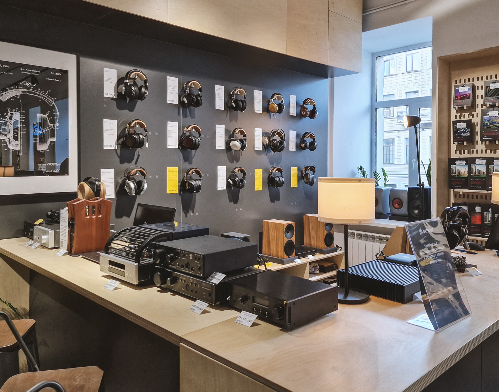

Closet Melody
Добро пожаловать в наш музыкальный магазин "Closet Melody"! "Closet Melody" это не просто магазин, который имеет точки в разных местах России, но и магазин в котором есть разнообразные услуги. В отличии от других магазинов, мы можем писать текста, делать биты, сведение и мастеринг и практически всё,что связано со звукоинженерией! Не хватает денег на музыкальный инстурмент? Так возьмите его у нас в аренду,так явно дешевле! Наш магазин в последние годы настолько набрал обороты, что теперь мы можем устраивать концерты прямо в нашем магазине! В нашем магазине побывали уже такие артисты, как Дима Билан, LOV66, OG Buda и другие. Мы очень уважаем своих клиентов, поэтому делаем всё, чтобы вы остались рады! Совершайте покупки, выпускайте свои песни, приходите на концерт любимого артиста - всё это только в "Closet Melody".
Кратко рассмотрим некоторые из музыкальных комплектующих:
- Струны, стержни, механика: Для гитар, скрипок, бас-гитар, струнных и клавишных инструментов, которые требуют регулярной замены струн или механики для поддержания качества звучания.
- Клавиши и кнопки: Компоненты для клавишных инструментов, таких как фортепиано, синтезаторы, MIDI-клавиатуры и другие, которые могут нуждаться в замене или ремонте.
- Звукосниматели и микрофоны: Используются для записи звука с инструментов, микрофонных стендов или кронштейнов для поддержки микрофонов. Запчасти для ударных: Например, барабанные палочки, стойки, педали, и даже запчасти для барабанов или перкуссии.
- Кабели и адаптеры: Разнообразные кабели для подключения инструментов, аудиоаппаратуры и оборудования для записи или воспроизведения звука.
- Программное обеспечение и процессоры звука: Элементы программного обеспечения, а также процессоры звука и эффекты, используемые для создания и обработки звука.
- Аксессуары для обслуживания инструментов: Это могут быть чехлы, стойки, очистители, смазки и другие товары для ухода за инструментами.
Запись и воспроизведение звука
Обслуживание и уход

Обновление и модернизация
Музыкальные комплектующие играют ключевую роль в музыкальной индустрии и могут использоваться для различных целей!
Местоположение магазинов "Closet Melody"
Во всех магазинах Dr.Head мы создали комфортную атмосферу для ценителей качественного звука:
- широкий выбор наушников, Hi-Fi техники и винила на самой большой площадке в России;
- демо-зоны, где можно протестировать всю продукцию;
- лаборатория по снятию слепков для изготовления индивидуальных наушников и берушей;
- оборудованная сцена и место для автограф-сессий с музыкантами;
- регулярные презентации новинок от наших партнеров Sennheiser, Sony и др.
- самая большая студия звукозаписи для тестирования оборудования на Новом Арбате;
- оборудование для профессиональной работы со звуком.
- Создавая магазины Closet Melody, мы думали о каждом нашем клиенте и партнере. Приходите и проверьте сами. Нам важно, насколько мы попали именно в ваше представление о лучшем магазине наушников и аудио в России.

Москва, Новый Арбат, 15
-
Как добраться?
- С метро "Арбатская" выход 8 выходите, далее поварачиваетесь налево и идёте напрямую, примерно через 10 мин слева будет наше здание!
- С метро "Библиотека имени Ленина" выход 2 выходите, далее идёте на остановку "Библиотека", ждёте автобус (интервал 5 минут), садитесь и выходите на остановке "Новоарбатская", здание будет возле остановки!
-
История этого здания!
- На самом деле Closet Melody на новоарбатской является первым зданием нашей компании! Здание открылось в 2019 году! До нашего музыкального магазина здесь был мини тц "Красный хвост", но тц не обладало высокой популярностью, поэтому нашему магазину в первое время пришлось нелегко, но со временем данное место стало очень популярным!
-
График работы
- с 9:00 до 22:00
-
Что имеется в здании?
- Студия звукозаписи
- Площадка для концертов
- Партер
- Игровая комната
- Комната для специальных услуг
- Зона комфорта
Москва, Новодмитровская, 1, стр.16
-
Как добраться?
- С метро "Дмитровкская" выход 8 выходите, далее поварачиваетесь направо и идёте напрямую, примерно через 4 мин слева будет наше здание!
- С метро "Дмитровская" выход 1 выходите, далее идёте на остановку "Дом Культуры", ждёте автобус (интервал 30 минут), садитесь и выходите на остановке "Подземная", здание будет возле остановки!
-
История этого здания!
- Здание на Дмитровской было открыто в 2021 году и является самым большим в Москве!
-
График работы
- с 9:00 до 00:00
-
Что имеется в здании?
- Студия звукозаписи
- Площадка для концертов
- Партер
- Игровая комната
- Комната для специальных услуг
- Зона комфорта
- Большой холл
- Специальная комната
Кызыл, ул. Рабочая 250
-
Как добраться?
- Напротив остановки "Рабочая"!
-
История этого здания!
- Единственное здание в городе Кызыл!Здание было построено в 2020 году и сразу стало очень популярным в Республике Тыва!
-
График работы
- с 9:00 до 20:00
-
Что имеется в здании?
- Студия звукозаписи
- Площадка для концертов
- Партер
- Игровая комната
- Комната для специальных услуг
Подробнее о магазинах
Что такое микрофоны и почему нужно подойти к его выбору очень серьезно?
Микрофон - это устройство, которое преобразует звуковые колебания в электрические сигналы, которые затем могут быть записаны или переданы на устройства для воспроизведения звука. Они используются в различных областях, таких как музыкальная индустрия, радиовещание, запись звука, конференции и другие.
Микрофоны бывают разных типов, каждый из которых имеет свои особенности и предназначение:
- Динамические микрофоны: Они просты в использовании и довольно прочны. Используются на концертах, для записи голоса и музыкальных инструментов в студиях или на выступлениях.
- Конденсаторные микрофоны: Они обладают более широким диапазоном частот и лучшим качеством звука. Используются для высококачественной студийной записи, вещания, подкастов и других профессиональных задач.
Подробнее о конденсаторных микрофонах
-
Чувствительность:
-
Конденсаторные микрофоны обычно обладают высокой чувствительностью, что означает, что они могут передавать даже тончайшие звуковые волны. Это делает их хорошим выбором для записи звука с высокой детализацией.
-
Широкий диапазон частот:
- Они способны воспроизводить широкий спектр звуковых частот, начиная от низких до высоких. Это позволяет им захватывать полный звуковой спектр и использоваться для разных инструментов и голоса.
-
Фантомное питание:
- Конденсаторные микрофоны требуют источника питания, чаще всего используется фантомное питание через XLR-кабель или встроенные батарейки в микрофоне.
-
Высокое качество звука:
- Они обладают более чистым, детализированным и естественным звуком по сравнению с другими типами микрофонов. Это делает их популярным выбором для студийной записи, радиовещания, подкастов и профессионального аудио-записи.
-
Использование в студийных условиях:
- Конденсаторные микрофоны часто используются в студийных условиях для записи вокала, инструментов, акустических сессий и других задач, требующих высокого качества звука.
Подробнее о динамических микрофонах
-
Простота и надежность:
- Динамические микрофоны отличаются прочностью и надежностью. Они могут выдерживать некоторые внешние условия, такие как удары или падения, что делает их идеальным выбором для использования на концертах или в условиях, где требуется более устойчивый микрофон.
-
Отсутствие необходимости в фантомном питании:
- В отличие от конденсаторных микрофонов, динамические микрофоны не требуют фантомного питания. Они могут быть просто подключены к устройству для записи или усилителю и использоваться немедленно.
-
Высокая устойчивость к высокому уровню звукового давления:
- Динамические микрофоны хорошо справляются с высокими уровнями звука, такими как громкие удары барабанов или гитары, что делает их отличным выбором для микрофонирования ударных инструментов.
-
Использование на концертах и выступлениях:
- Из-за их прочности и способности обрабатывать высокие уровни звукового давления, динамические микрофоны широко используются на концертах и выступлениях.
Популярные производители
"Хочется поиграть на гитаре... Но не знаю какую купить..."
Гитара - это струнный музыкальный инструмент, который имеет шесть (обычно) струн, настроенных в определенных интервалах, позволяющих играть аккорды, мелодии и риффы. Она состоит из корпуса с грифом, на который натянуты струны. Существует несколько типов гитар, каждый из которых имеет свои особенности. Выделим самые популярные виды гитар: классические и аккустические!
Характеристики классической гитары
-
Форма и конструкция:
- Классическая гитара имеет небольшой корпус с плоским дном и широким верхом. Её корпус обычно изготавливается из дерева (кедр, красное дерево, палисандр) и имеет отверстие (розетку) на верхней деке для улучшения звучания.
-
Гриф и накладка:
- Гриф классической гитары обычно более широкий и плоский по сравнению с грифами других гитар. Накладка грифа изготавливается из древесины (обычно палисандра или других твердых пород) и может иметь украшения, такие как инкрустации или узоры.
-
Струны:
- Особенностью классической гитары является использование нейлоновых струн для высоких нот и стальных для низких. Это придает инструменту более мягкий и теплый звук по сравнению с электро- или стальными акустическими гитарами.
-
Звучание:
- Классическая гитара обладает богатым, натуральным звуком с хорошо выраженными низкими и мягкими высокими частотами. Этот инструмент обычно используется для исполнения классической музыки, испанских и латиноамериканских стилей, но также может быть применен в различных музыкальных жанрах.
-
Интонирование и набор пальцевой техники:
- Классическая гитара часто используется для развития пальцевой техники игры на гитаре. Изучение этого инструмента может включать в себя изучение различных техник игры пальцами (арпеджио, тремоло, различные стили штрихования).
А что насчёт акустических гитар?
-
Корпус и конструкция:
- Акустические гитары обычно имеют полый корпус, который может быть изготовлен из разных древесных пород, таких как ель, кедр, или другие виды древесины. Они могут иметь разные формы корпуса, например, дредноут, концертную, джамбо, что влияет на звучание.
-
Струны:
- Обычно акустические гитары используют стальные струны, хотя есть и нейлоновые варианты. Стальные струны придают инструменту яркий, кристальный звук с богатыми басами.
-
Звучание:
- Акустические гитары имеют богатый звук, который отличается от классических гитар. Их звучание может быть ярким, резким, с лучшей атакой, чем у классических гитар, что делает их более подходящими для различных стилей музыки, включая фолк, кантри, рок.
-
Использование с усилителем:
- Некоторые акустические гитары имеют встроенные электронные пикапы, что позволяет подключать их к усилителям или звукозаписывающему оборудованию.
Популярные производители
Где найти товары?
Существуют помимо микрофонов и гитар множество других музыкальных товаров. Эти товары можно найти во вкладке "Каталог"! Начиная от xlr проводов, заканчивая нежными ванильными дисками с песнями Майкла Джексона можно найти в каталоге.

Каталог
Перейти в каталог!!!
ПодробнееНемного из нашего блога...
-
Новости:
- Closet Melody Awards 2023: чего ждать от главной премии года?
-
Топы:
- Рейтинг лучших наушников с шумоподавлением в 2023-2024 году
-
Статьи:
- Аудиоформаты: mp3, flac, wav и другие. Какой формат лучший, и чем они отличаются?
-
Статьи:
- История создания наушников: от первых прототипов до Bluetooth
-
Топы:
- Рейтинг лучших портативных плееров 2023-2024

Блок
Game Audio
Сегодня гейминг — это крупнейшая индустрия развлечений и профессиональный спорт, а успех в игре зависит не только от ваших навыков, но и от качества и удобства оборудования, которое вы используете. В частности нельзя недооценивать важность игровой гарнитуры, ведь иногда в ней проводят большую часть дня.

Corsair HS55 Stereo Carbon
-
Описание:
- Игровая гарнитура Corsair HS55 Surround отличается высоким качеством звучания на ПК и Mac и обеспечивает столь важный долгосрочный комфорт на весь день благодаря амбушюрам из искусственной кожи и пеноматериала с эффектом памяти и практически неощутимой легковесной конструкции. Всенаправленный микрофон улавливает голос пользователя громко и четко, при этом аудиоразъем на 3.5 мм обеспечивает широкие возможности для совместимости с большинством устройств.
-
Особенности:
- поддержка утилиты iCue от Corsair для настройки наушников
-
Комплектация:
- Наушники и документация
HyperX Cloud III Black Red
-
Описание:
- Более усовершенствованная и обновленная версия гарнитуры Cloud II с качественным звучанием, продуманной эргономикой и прочной конструкцией. Вот главное, что нужно знать про наушники HyperX Cloud III. У них удобная посадка и хороший звук, а также девайс вполне готов к ежедневным и многочасовым нагрузкам.
-
Особенности:
- надежный цельнометаллический каркас, динамики диаметром 53 мм, пена с эффектом памяти в амбушюрах и оголовье, широкие возможности для подключения, функция DTS: X Spatial Sound
-
Комплектация:
- игровая гарнитура, съемный микрофон, кабель USB, aдаптер USB-C - USB-A, документация.
Подробнее о товарах в каталоге
Новогодняя распродажа
Финальная распродажа года в Closet Melody! Порадуйте себя и близких подарками с внушительными скидками. 400+ моделей наушников, акустики, винила и другого аудио по привлекательным ценам.
Акция действует на сайте и в розничных магазинах до 31 декабря.
В Closet Melody всё можно послушать
Для вашего удобства мы открыли запись на прослушивание. Подключение аудио — достаточно длительный процесс. Мы ценим ваше время и, чтобы не тратить его на ожидание, предлагаем вам записаться на прослушивание заранее на этой странице.
-
Наушники и Personal аудио:
- Более 15 лет мы занимаемся персональным аудио, и сегодня в наших магазинах представлен огромный выбор наушников на любой звук и кошелёк. И абсолютно все эти наушники можно послушать и протестировать перед покупкой!
-
Акустика и Hi-Fi аудио:
- Мы не просто создали уютные и стильные комнаты, но ещё и правильно оформили их акустически, чтобы ваш опыт прослушивания был незабываемым. Вы можете протестировать любой понравившийся комплект аппаратуры и подобрать подходящие сочетания. Присаживайтесь поудобнее — вас ждёт увлекательное путешествие в мир высококлассного звука.
-
Микрофоны и PRO аудио:
- В магазинах Dr.Head представлены любые решения для PRO: микрофоны (в том числе эксклюзивные), мониторные наушники, аудиоинтерфейсы, MIDI-клавиатуры и многое другое. Всё это можно протестировать перед покупкой! А во флагманском магазине в Москве мы построили собственную студию звукозаписи, где вы можете не только проверять оборудование, но и записывать треки любой сложности.
-
Гарнитуры и game аудио:
- Не важно играешь ли ты в игры или занимаешься их созданием, проводишь стримы или он-лайн трансляции - в нашем пространстве можно выбрать наилучший комплект гарнитуры, микрофона, звуковой карты и всего остального для любых занятий! Просто подключай и сначала всё попробуй сам!
-
Custom shop:
- Это уникальный проект по изготовлению индивидуальных наушников и берушей по слепку уха. Мы работаем практически со всей отечественной поп- и рок-сценой, нам доверяют артисты и блогеры со всей страны. В нашей лаборатории каждый может заказать индивидуальные наушники, насадки или беруши, а также сделать индивидуальный дизайн своей техники.